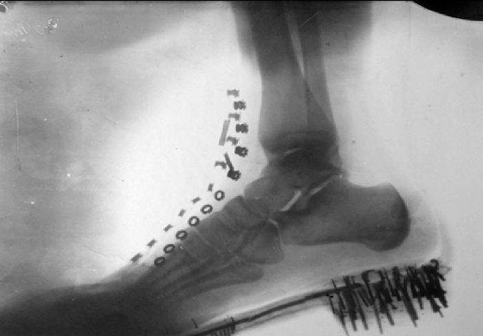

Radiația (razele) X sunt radiații electromagnetice ionizante, cu lungimi de undă mici, cuprinse între 0,01 și 100 Å (ångström). Razele X formează radiația X, o formă de radiație electromagnetică. Un amănunt mult mai puțin cunoscut din biografia lui Nikola Tesla ține tocmai de implicarea inventatorului în descoperirea razelor X, efort zădărnicit de puternicul incendiu care i-a distrus laboratorul în martie 1895. Tesla a scris că, intrigat de imperfecțiunile misterioase de pe plăcile fotografice din laboratorul său, a început investigarea razelor X în 1894 (pe atunci încă nu erau cunoscute). În afară de experimentele cu tuburile Crookes, Tesla a inventat propriul său tub vidat, care era un bec unipolar cu raze X. Acesta consta dintr-un singur electrod care emitea electroni. Nu exista un electrod țintă; prin urmare, electronii erau accelerați de câmpul electric produs de o bobină Tesla de înaltă tensiune.Tesla a afirmat că fluxul catodic era compus din particule foarte mici (adică electroni). Ideea sa că razele produse erau particule minuscule nu era deloc greșită; mulți ani mai târziu, fizicienii au descris proprietățile particulelor cuantelor de radiații electromagnetice numite fotoni. Pentru a evita încălzirea și topirea peretelui de sticlă al becului său cu raze X, Tesla a proiectat un sistem de răcire bazat pe un flux de aer rece de-a lungul tubului, precum și pe o baie de ulei (în care era introdus tubul).
